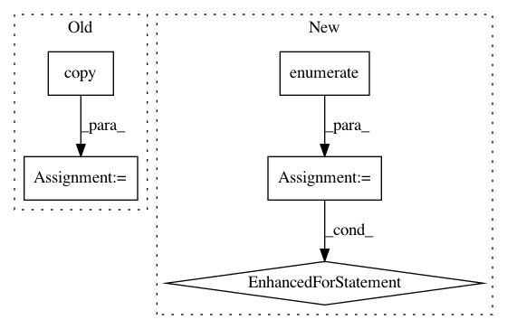

3df2eaf74d8f2299ca05e3e98cab5bf89dafc249,cnn_visualisation.py,,preprocess_image,#Any#,91
Before Change
means = [0.485, 0.456, 0.406]
stds = [0.229, 0.224, 0.225]
preprocessed_img = img.copy()[:, :, ::-1]
for i in range(3):
preprocessed_img[:, :, i] = preprocessed_img[:, :, i] - means[i]
preprocessed_img[:, :, i] = preprocessed_img[:, :, i] / stds[i]
preprocessed_img = \
After Change
// Transpose to obtain D-W-H
im_as_arr = im_as_arr.transpose(2, 0, 1)
// Normalize the channels
for channel, _ in enumerate(im_as_arr):
im_as_arr[channel] /= 255
im_as_arr[channel] -= mean[channel]
im_as_arr[channel] /= std[channel]
// Convert to float tensor
im_as_ten = torch.from_numpy(im_as_arr).float()
// Add one more channel to the beginning. Tensor shape = 1,3,224,224
im_as_ten.unsqueeze_(0)
// Convert to Pytorch variable
In pattern: SUPERPATTERN
Frequency: 3
Non-data size: 5
Instances
Project Name: utkuozbulak/pytorch-cnn-visualizations
Commit Name: 3df2eaf74d8f2299ca05e3e98cab5bf89dafc249
Time: 2017-10-24
Author: utku.ozbulak@gmail.com
File Name: cnn_visualisation.py
Class Name:
Method Name: preprocess_image
Project Name: etal/cnvkit
Commit Name: e58060450b608139fb488193e624534f40214622
Time: 2016-02-10
Author: eric.talevich@gmail.com
File Name: cnvlib/commands.py
Class Name:
Method Name: _cmd_import_theta
Project Name: dhlab-epfl/dhSegment
Commit Name: 4c396eb38f8696d8869219dc8c20d19a374cbacc
Time: 2018-02-13
Author: seg.benoit@gmail.com
File Name: doc_seg/evaluation/cbad.py
Class Name:
Method Name: cbad_evaluate_folder